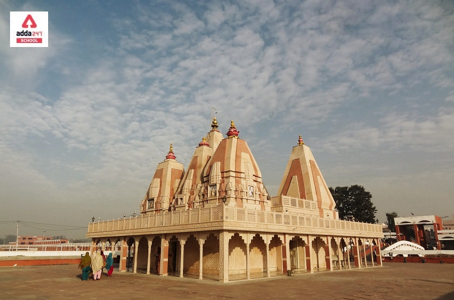
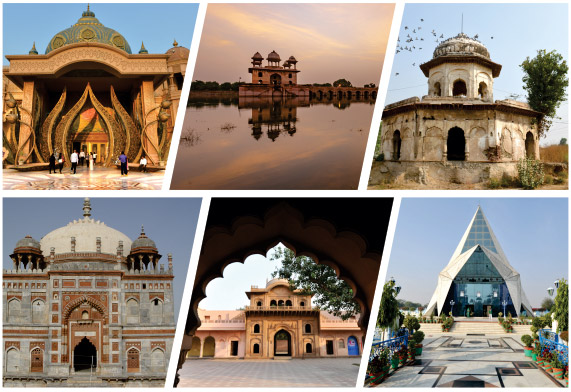
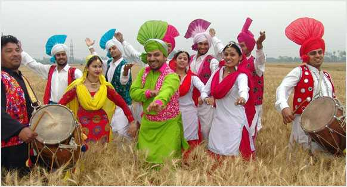
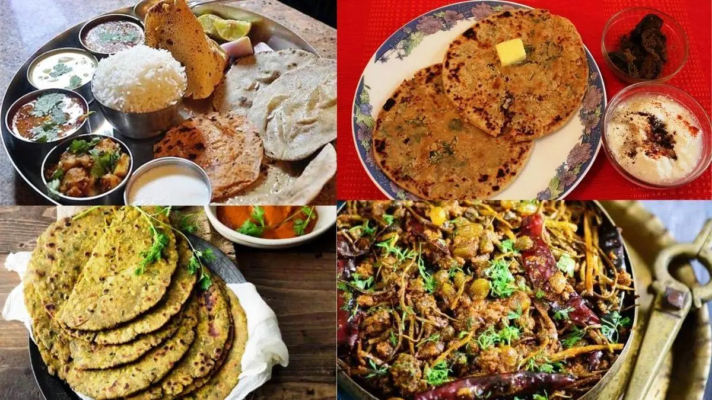
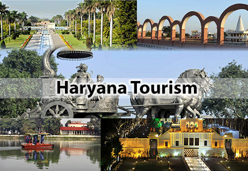

| ✧ Aspect | Information |
|---|---|
| ✧ Capital | Chandigarh |
| ✧ Chief minister | Manohar Lal Khattar |
| ✧ Largest City | Faridabad |
| ✧ Districts | 22 |
| ✧ Official Language | Hindi |
| ✧ Other Language | Haryanvi |
| ✧ Population | Approximately 28 million |
| ✧ Area | Approximately 44,212 square kilometers |
| ✧ Major Rivers | Yamuna, Ghaggar, and the Sahibi. |
| ✧ Major Industries | agriculture, manufacturing,services IT and software services, textiles, and agricultural products. |
| ✧ Popular Place | Sultanpur National Park, Surajkund, Pinjore Gardens, Kurukshetra, and the historic town of Panipat. |
Their basic trousseau includes Daaman, Kurti & Chunder. 'Chunder' is the long, coloured piece of cloth, decorated with shiny laces and motifs, and is meant to cover the head. 'Kurti' is a shirt like a blouse. The 'Daaman' is the flairy ankle-long skirt, in striking vibrant colours.
Haryana, a state in northern India, has a rich and diverse history that dates back millennia. Its name is
derived from the Sanskrit words "Hari" meaning god Vishnu and "ayana" meaning home, signifying its
ancient association with Lord Vishnu. The region has been witness to the rise and fall of several
ancient civilizations, including the Indus Valley Civilization, which flourished along the banks of the
Sarasvati River.
During the Vedic period, Haryana was part of the Kuru Kingdom, one of the sixteen Mahajanapadas (great
kingdoms) of ancient India. The epic Mahabharata, believed to have been composed around 400 BCE to 400
CE, is set in this region, with the battle of Kurukshetra being a focal point.
In medieval times, Haryana saw the rise of various dynasties such as the Mauryas, Guptas, and Rajputs,
who left their mark on the region through architectural marvels and cultural legacies. However, it was
under the rule of the Delhi Sultanate and later the Mughal Empire that Haryana saw significant political
and cultural developments.
With the decline of the Mughal Empire, Haryana came under the influence of the Marathas and later the
Sikhs. However, the British East India Company's ascendancy in the 19th century marked a new chapter in
the region's history, as it became part of the British colonial administration.
Following India's independence in 1947, Haryana was carved out of the Punjab province on
linguistic and administrative grounds on November 1, 1966. Since then, it has emerged as one of India's
most progressive states, boasting rapid industrialization, agricultural advancements, and socio-economic
development.
Today, Haryana stands as a vibrant blend of tradition and modernity, with its ancient heritage preserved
in its numerous historical sites and monuments, while also embracing the challenges and opportunities of
the contemporary world.




